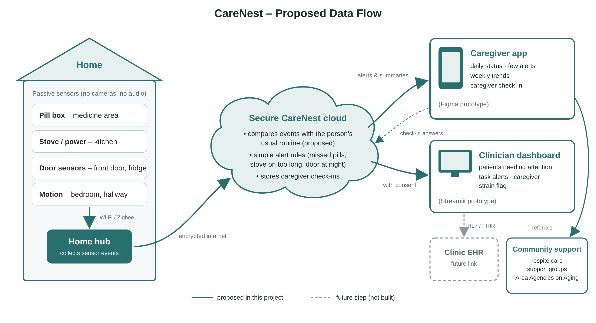
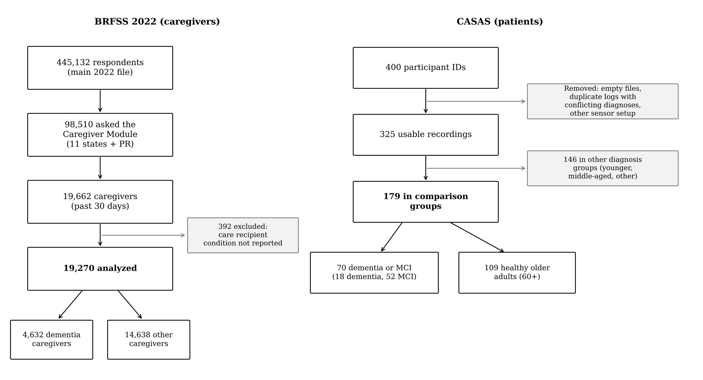
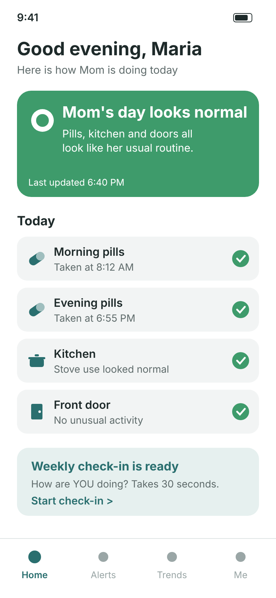
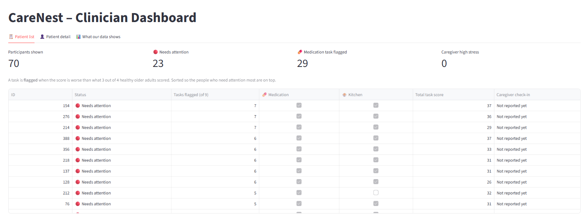

1. Presentation:
Our Pecha Kucha talk: 20 slides, 20 seconds each, narrated by Vaidehi (slides 1–10) and Simran (slides 11–20).
2. The Problem:
A caregiver at work can't tell if her mother took her evening pills or left the stove on. Home sensors can record these things, but more data doesn't make caregiving easier. In a randomized trial of 179 caregivers, remote monitoring had no direct effect on selected caregiver outcomes (Gaugler et al.). So we treated this as a design problem as much as a sensing problem.
3. Design Sketch: Data Flow:
How data moves across the digital health technologies in CareNest, from the sensors in the home to the caregiver and the care team.

4. Design Sketch: Study Samples:
The two datasets describe different people and can't be linked, so we analyzed them separately and brought them together only at the design stage.

5. Caregiver App (Figma Prototype):
Click through the screens. Our persona is Maria, 52, who works full time and cares for her mother Rosa, 78, who has dementia and lives alone nearby. Trend values are example data.

For the full clickable version, open the Figma file.
6. Scenario Walkthroughs:
We did a cognitive walkthrough of three scenarios ourselves, as designers. The question was whether a caregiver can quickly understand what happened, why it matters and what to do next.
1. Possible missed medication
Rosa's pill box hasn't been opened by evening.
- Worked
- Home turns yellow and “Call Mom” is clear.
- Problem
- “Mark as handled” was vague.
- Change
- Options like “She took them” or “I reminded her”.
2. Kitchen safety alert (proposed)
The stove has been on for 40 minutes, longer than usual.
- Worked
- “Longer than usual for this time of day” explains why it matters.
- Problem
- Home and Alerts screens disagreed.
- Change
- Show live stove status and keep both screens in sync.
3. Caregiver looking for support
Maria reports high stress in her weekly check-in.
- Worked
- The check-in is quick and support options match her answers.
- Problem
- Support was only reachable through the check-in, and stress was shared with the care team without asking.
- Change
- An always-visible “I need support” and a consent step before sharing.
7. Clinician Dashboard (Streamlit Prototype):
Built on real CASAS task scores. A task is flagged when a person scores worse than 3 of 4 healthy adults; 4 or more of 9 flags means “Needs attention”.

The flags come from observer-scored CASAS tasks, not automatic sensor detection. The cutoffs are simple starting points, not clinically validated, and the caregiver strain flag is a demonstration input. Try it live at the link above. If it shows “Wake up this app”, click it and wait about 30 seconds.
8. From Findings to Design:
Table 1. How our findings shaped CareNest
| Finding | Design decision | Where it appears |
|---|---|---|
| Filling the pill dispenser showed the largest gap (r = 0.43; 0.45 in a broader sample) | Medication is the first alert | App Home and Alerts; dashboard medication flag |
| Making soup in the microwave also differed (r = 0.25) | Kitchen tasks come next; kitchen-safety alert (proposed) | App Home and Alerts; dashboard kitchen flag |
| Whole-visit sensor counts did not differ between groups | Few, task-based alerts instead of general movement | Alerts screen shows only important events |
| Dementia caregivers carry a heavier load (more hours, longer caregiving, more personal care) | Low-effort app, weekly check-in, support links | Check-in and Support screens |
| Monitoring alone had no direct effect on selected caregiver outcomes (Gaugler et al.) | Every alert says what to do next; link to the care team | Alert buttons; clinician dashboard |
CareNest is a prototype. It has not been tested with real caregivers or clinically validated.